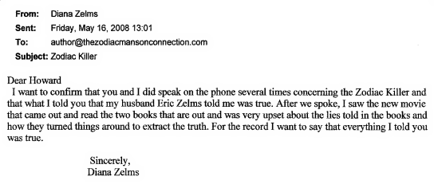

|
Eric
Zelms Related
Information |
| |
|
Since the time that researchers began delving into this case it has been hotly debated whether or not two San Francisco police officers talked to Zodiac on the night of 10.11.69 after cab driver Paul Stine was murdered. Zodiac claimed this actually happened in his 11.09.69 letter to the San Francisco
Chronicle: |
| |
| |
"p.s. 2 cops pulled a goof abot 3
min after I left the cab. I was
walking down the hill to the
park when this cop car pulled up
& one of them called me over
& asked if I saw any one
acting supicisous or strange
in the last 5 to 10 min & I said
yes there was this man who
was running by waveing a gun
& the cops peeled rubber &
went around the corner as
I directed them & I dissap
eared into the park a block &
a half away never to be seen
again." |
|
|
| |
|
This author has always maintained that the officers
(Eric A. Zelms and senior officer Donald A. Fouke) did indeed speak with the Zodiac as he claimed. Eric Zelms was killed in the line of duty only a
short time after this encounter. Fouke (who is now retired) on a television show about the Zodiac has maintained that as they were searching for a Black Male Adult (as per the All Points Bulletin) they passed by a White Male Adult walking down the street. He said that for five to ten seconds he took note of this person's appearance. |
| |
|
In a memo dated
11.12.69
(after both the 10.13.69 Zodiac letter with Paul Stine's blood stained shirt in
it and the above 11.09.69 Zodiac letter had arrived) Fouke wrote: |
| |
| |
"Sir:
I respectfully wish to report the following, that while
responding to the area of Cherry and Washington Streets a
suspect fitting the description of the Zodiac killer was
observed by officer Fouke walking in an easterly direction
on Jackson street and then turn north on Maple street. This
subject was not stopped as the description received from
communications was that of a Negro male. When the right
description was broadcast reporting officer informed
communications that a possible suspect had been seen going
north on Maple Street into the Presidio, the area of Julius
Kahn playground and a search was started which had negative
results. The suspect that was observed by officer Fouke was
a WMA 35-45 Yrs about five-foot, ten inches, 180-200 pounds.
Medium heavy build - Barrel chested - Medium complexion -
Light-colored hair possibly greying in rear (May have been
lighting that caused this effect.) Crew cut - wearing
glasses - Dressed in dark blue waist length zipper type
jacket (Navy or royal blue) Elastic cuffs and waist band
zipped part way up. Brown wool pants pleeted [sic] type baggy in
rear (Rust brown) May have been wearing low cut shoes.
Subject at no time appeared to be in a hurry walking with a
shuffling lope, Slightly bent forward. The subjects general
appearance - Welsh ancestry. My partner that night was
officer E. Zelms #1348 of Richmond station. I do not know if
he observed this subject or not. Respectfully submitted.
Donald A. Fouke, Patrolman, Star 847." |
|
|
|
Thanks
go to author Robert Graysmith for locating the above memo and
publishing it in his book Zodiac Unmasked. |
|
|
|
Hence the debate. Was Zodiac's written account of speaking to the officers a lie? Is Fouke's story accurate? Or was there a cover-up? |
|
|
|
On the archived portion of the message board at ZodiacKiller.com from the year 2002, a poster, Ray N asks a reasonable question: Why hasn't Eric Zelms' widow been asked if he ever told her whether or not he and/or Fouke spoke to Zodiac? Since 1987 it has been the author's desire to find either Zelms' widow or a family member who could possibly clear up this
long-lived mystery. |
|
_________________________________ |
|
|
|
Thankfully, during the week of August 15, 2005, I was able to have an interview with Zelms' widow,
Diana. The following will be a brief summary of the graciously given information. |
|
|
|
Diana
said that Eric closely followed the Stine murder on television. He told her that when he and Fouke saw a WMA they quickly decided to question him.
He said that they spoke to this man "face to face!" The man was polite, calm and answered all of their questions. There was nothing suspicious about him. They then quickly left to continue their search for a BMA as had been broadcast in the APB. |
|
|
|
Officer Zelms confessed to his wife that when they realized the man they had talked to
was the Zodiac they absolutely did not know what to say or do. They understood what the full ramifications would be if it became known that San Francisco police officers had confronted but failed to capture the Zodiac Killer! She was told, in all confidence, that Fouke made the final decision to say they only drove by a WMA and he was not stopped because they were looking for a BMA. |
|
|
|
It would seem that Fouke knew that he and Zelms had spoken to Zodiac "face to face" and he wanted to protect a rookie officer.
It would be quite unthinkable that the senior officer did not know
if his partner had seen the WMA as Fouke wrote in his memo and has
said in some interviews. Zelms admitted to his wife in private that he cooperated with Fouke because he didn't want to get a negative report and possibly lose his job. In light of the heavy criticism from some quarters about the failure of the
SFPD to capture the Zodiac, if what had happened were to get out the effects would have been devastating. |
|
|
|
Robert Graysmith in his book
Zodiac writes, "The two patrolmen were shattered and filled with
despair." In his book Zodiac Unmasked Graysmith says that detective George Balwart interviewed Fouke in the 1990s. Fouke "wasn't real happy about being interviewed."
And the sighting of Zodiac "was not the high point of his career and he didn't want to talk about it. Who could blame him?" |
|
|
|
Retired detective Dave Toschi is quoted as saying to Graysmith that
they (SFPD) "felt that Zelms and Fouke had stopped Zodiac, and did everything we could to keep it quiet so they wouldn't be hurt by the police commission or embarrassed." Toschi said that Fouke said, in tears, "it was the guy," and that they had both officers "do a sketch." |
|
|
|
Former detective John Lynch, who worked the Zodiac case in Vallejo said in the same Graysmith book that "when they (Fouke and Zelms) were talking to him (Zodiac) a call came on the radio . . . to look for a . . . black man and they let this guy go . . . you can almost bet your boots the cops came out of that squad car with their guns in their hands. You'd have to." Lynch believed that they waited so long to tell the
Chief because they were very upset over the incident. |
|
|
|
The late Police Reporter and Zodiac Expert, Dave Peterson, told the author that he thought Zodiac did speak to the officers or that is what he had learned. He was the reporter that had the "scoop" on this story. The
SFPD denied then, and still does to this very day, that any of it's officers ever spoke to Zodiac. |
|
|
|
Zelms did not indicate that he or his partner saw any blood stains on the man they questioned. This raises some questions about just how much blood was on Zodiac. Fouke did say that the man's jacket looked "dirty" and in his 11.12.69 memo he describes the man as wearing rust colored pants. Perhaps the clothing did not show any blood stains. Then again it was night time and the officers were in a hurry. |
|
|
|
Zelms
also mentioned to his wife that Zodiac appeared quite ordinary in
size and stature. He was not physically imposing enough to stand out
in any way. |
|
|
|
Diana
said that privately her husband was deeply distressed about the entire matter. He carried the Zodiac composite with
him, which was a good resemblance of the man he spoke to, in case he ever saw him again.
He admitted to her that when he realized he had spoken to the Zodiac Killer "face to face" he became filled with fear. He realized then how close he had come to death. Young Eric Zelms did not know that the grim reaper was
less than three months away. He was shot three times at around 1 AM
on New Years Day 1970 and died a hero leaving a young widow, an infant son and family to grieve his passing. |
|
|
|
 |
|
_________________________________ |
|
|
|
Here
is a letter to Howard Davis from Sandra Betts |
|
|
|
 |
|
_________________________________ |
|
|
|
Here is a link to a very good and complete article about
Officer Zelms that was in the June 1970 issue of
Official Detective Stories magazine. It is posted on
ZodiacKiller.com. |
|
|
|
Dragnet for the
Killers of a Hero Rookie Cop |
|
|
|
Back
Top
of page |
|
|
|
|